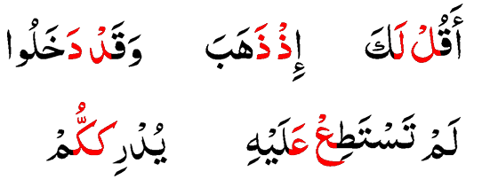

-
Pengecualiana pada pertemuan - pertemuan huruf berikut ini :
mim (م) sukun dan mim (م) berharakat : - Idgham Mislan (dengung);
nun ( ن) sukun dan nun ( ن) berharakat: - Idgaham bi ghunnah (dengung)
dan huruf-huruf mad (ا و ي) - dibaca panjang sebagaimana mestinya (hukum mad).
-

Contoh - contoh idgham mutamatsilain.